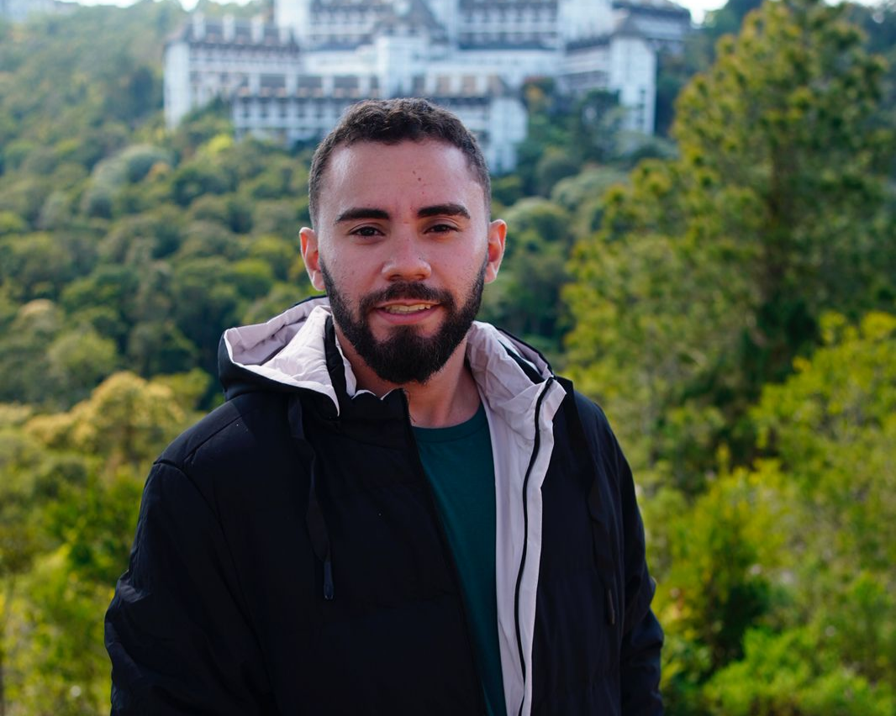

=====================================
LAURO BRIZIDIO
=====================================

> Sobre Mim
Olá! Sou Desenvolvedor Android e estudante de Engenharia Eletrônica.
Foco em arquitetura de software, desenvolvimento de SDKs e integração mobile com sistemas cloud-native. Experiência em aplicações escaláveis, modularização,
boas práticas arquiteturais e integração com serviços em nuvem.
Interesse contínuo em robótica, microeletrônica e sistemas embarcados.
> Competências Técnicas
Android
- Kotlin
- Java
- Jetpack Compose
- MVVM
- Clean Architecture
- Testes Automatizados
- AOSP
Cloud & Backend
- AWS Lambda
- CloudWatch (Log Insights)
- Arquitetura Serverless
- Integração com APIs externas
Ferramentas
- Git & GitHub
- Docker
- Linux
- CI/CD
Eletrônica
- Microeletrônica
- Simulação de Circuitos
- Sistemas Digitais
> Projetos
- Plant.IO
- VRWU - Virtual Reality for Wheelchair users
- Integração entre Factory IO e CLP
> Contato
Email: laurobrizidio@hotmail.com
LinkedIn: linkedin.com/in/laurobrizidio
GitHub: github.com/laurobrizidio
Última atualização: 2026